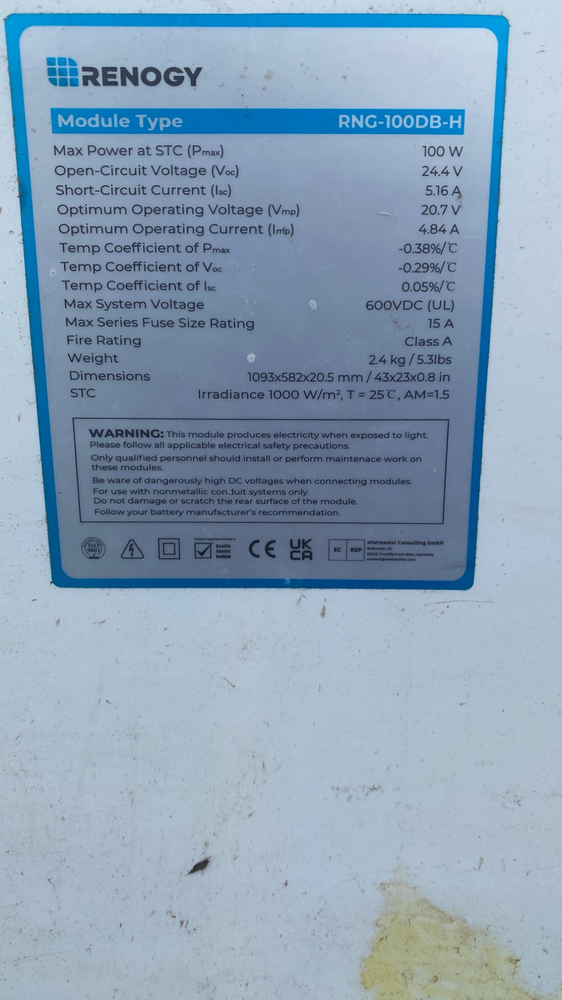
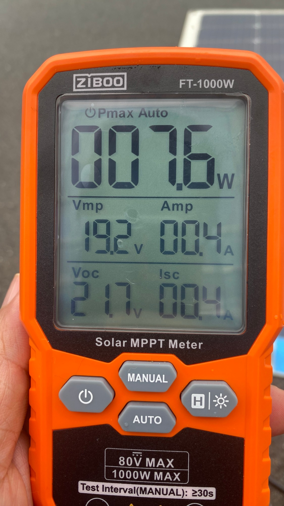
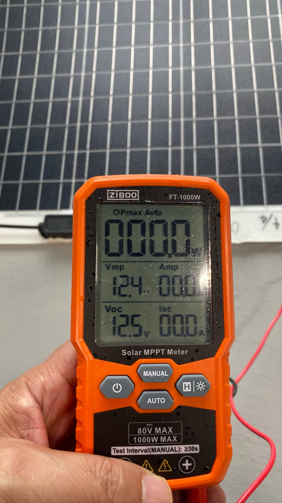
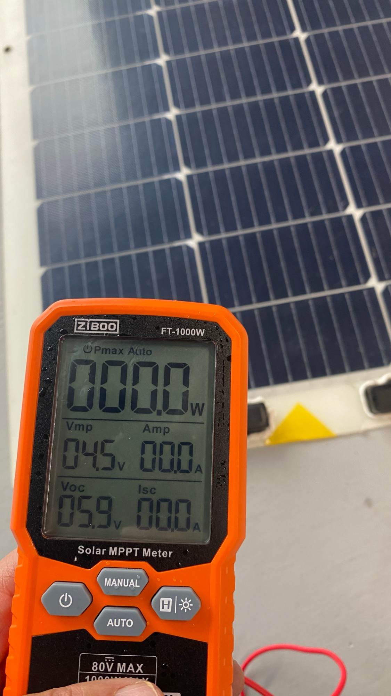
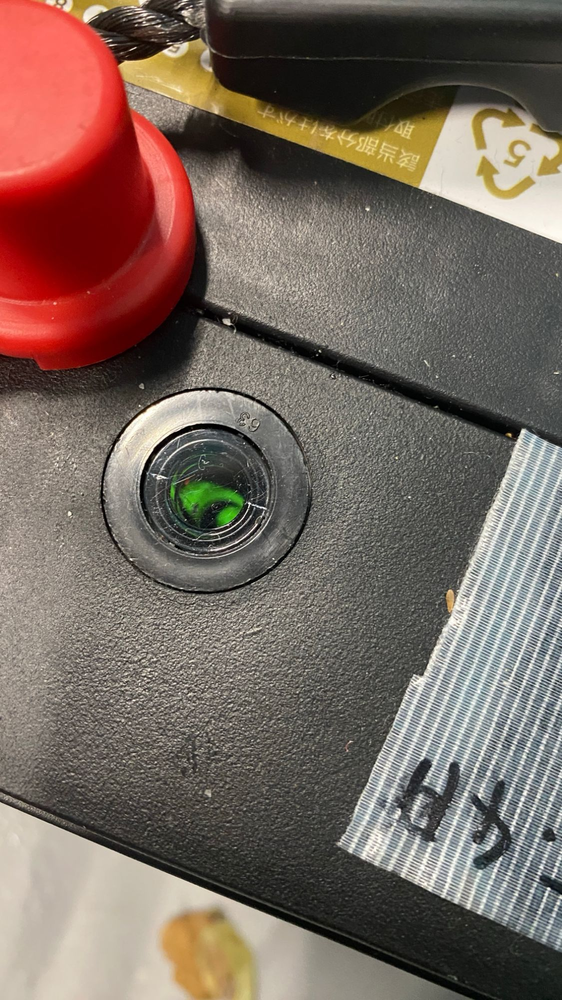
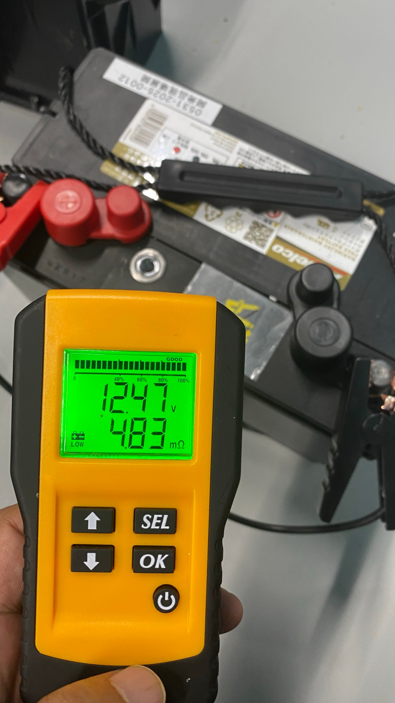
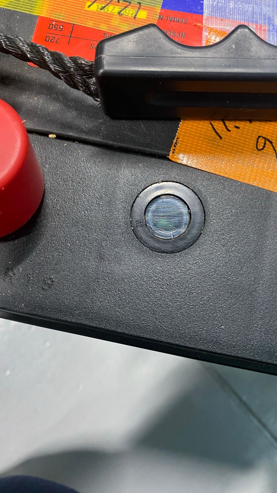
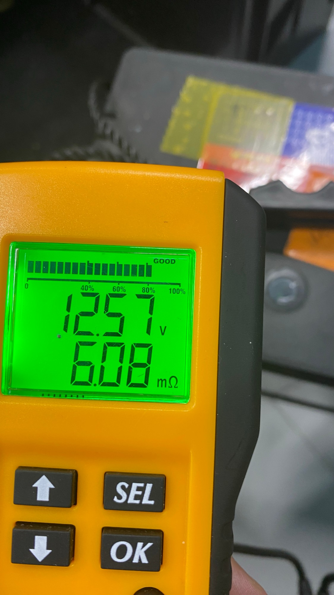

解体した直後に、1台ずつ「番号を付ける → 測る → 判定する → 記録する」を行うための手順書です。記録ボタンを押すと、結果がこの端末の中に保存されます。作業が終わったら、ページ下の「記録一覧」からCSVを担当者に送ってください。
迷ったら、良品と並べて同じ条件で測り、比べる 天気・照明・時刻で値は大きく変わります。数値そのものより、基準品との比較のほうが確実です。
いま作業している地点
各地点の構成：200Wパネル 2枚（直列）＋バッテリー M27MF 2台（直列・24V）＋チャージコントローラなど。地点を切り替えると、番号が「A-P1」「B-B1」のように自動で変わります。現場名・記録者・地点は、この端末に記憶されます。
配線のつながりが分かるように、全体の写真を1〜2枚撮ります。
テープに書いて、本体に貼ります。1地点あたりの番号は次のとおりです（A地点の例）。
パネル：A-P1、A-P2 バッテリー：A-B1、A-B2 その他：A-C1…
このページの A・B・C の判定ツールに数値を入れ、写真を付けて「記録する」を押します。
良要確認不良の3か所に分けて置きます。テープの色を緑・黄・赤に分けると、あとで混ざりません。
地点ごとに、パネル2枚・バッテリー2台がそろって記録されているかを確認して、作業終了です。
Open-Circuit Voltage（Voc）とShort-Circuit Current（Isc）の2つの数字を使います。
地面に置いたままでも構いません。影がかからないようにしてください。
パネルの赤ケーブル（＋）と黒ケーブル（−）をつなぎます。画面下段の左が Voc（電圧）、右が Isc（電流） です。
ガラスの割れ、焼け跡、裏面の焦げやシミ、ケーブルの傷がないかを見ます。
同じ時刻・同じ向きで測った2枚は、健全ならほぼ同じ値になります。片方だけ電圧や電流が1割以上低ければ、低いほうを「要確認」にします。
下の写真は、別の型式のパネルで行ったサンプル測定です。表示の読み方の参考にしてください。




機器
測定
外観（当てはまるものにチェック）
記録
200Wパネルの銘板の値は、1枚目で入力すれば2枚目以降も残ります。
| 条件 | 見るもの | 良 | 要確認 | 不良 |
|---|---|---|---|---|
| 晴れ（昼） | 電圧 ÷ 銘板Voc | 85%以上 | 60〜85% | 60%未満 |
| 晴れ（昼） | 電流 ÷ 銘板Isc | 75%以上 | 55〜75% | 55%未満 |
| 曇り・雨 | 電圧 ÷ 銘板Voc | 80%以上 | 60〜80% | 60%未満 |
| 室内 | 電圧 ÷ 基準品の室内電圧 | 80%以上 | 50〜80% | 50%未満 |
| どの条件でも | 電圧 | — | 0V（断線） | |
曇りや雨の日は、電流で良否を判定しません（光が弱すぎるため）。電流まで判定したいときは、晴れた日の11〜13時に測り直してください。
緑次の手順へ 黒充電不足 白・透明その時点で不良（液不足。充電しても直りません）
表示される電圧（V）と内部抵抗（mΩ）を撮影します。
下の写真の不良品も、テスターの表示は「GOOD」でした。インジケータの色と同じ型式の良品との内部抵抗の比較で判断します。
2台は同じ条件で使われてきたため、健全ならほぼ同じ値になります。電圧が0.2V以上違う、または内部抵抗が1.25倍以上違うときは、悪いほうを「要確認」にします。記録一覧の「地点ごとの確認」に差が自動で表示されます。
下の写真はサンプル測定です。M27MFの良品の内部抵抗は約4.8mΩでした（判定ツールの基準値に入れてあります）。




機器
インジケータの色
測定
外観（当てはまるものにチェック）
記録
| 項目 | 良 | 要確認 | 不良 |
|---|---|---|---|
| インジケータ | 緑 | 黒（充電してから再測定） | 白・透明 |
| 電圧 | 12.4V以上 | 12.0〜12.4V | 12.0V未満（充電しても戻らない） |
| 内部抵抗 ÷ 基準品 | 1.25倍以下 | 1.25〜1.5倍 | 1.5倍超 |
| 外観 | 異常なし | 端子の腐食 | 膨らみ・液漏れ |
本体の横や裏にあるラベルを撮ります。
表示やランプが正常に点いていたかどうかです。分からなければチェックしないでください。
焦げ跡、焦げ臭さ、膨らみ、水濡れ、さびを見ます。
機器
確認（当てはまるものにチェック）
記録
記録はこの端末のブラウザの中だけにあります。ほかの人の端末からは見えません。ブラウザの履歴やデータを消すと記録も消えるので、作業が終わったら必ずCSVを送ってください。